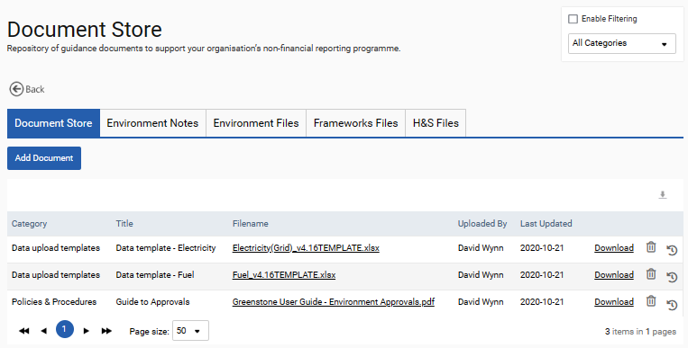
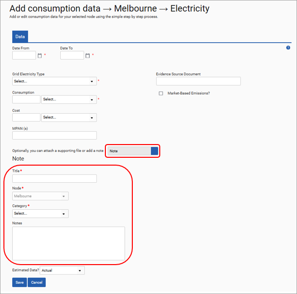
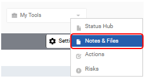
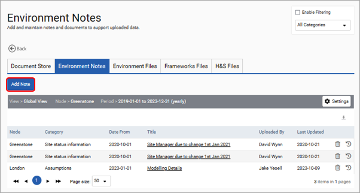
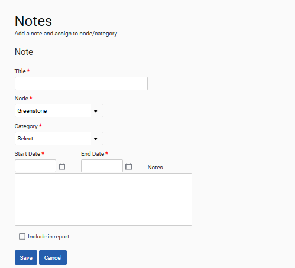
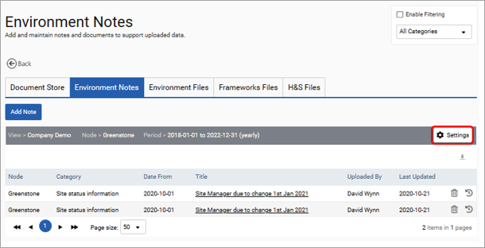
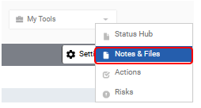
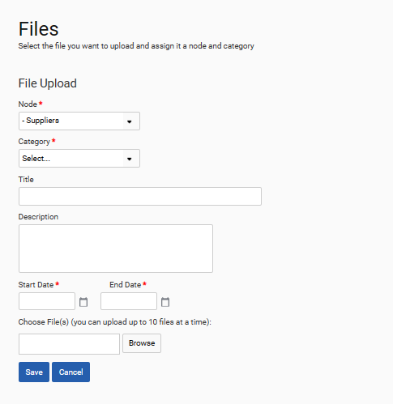
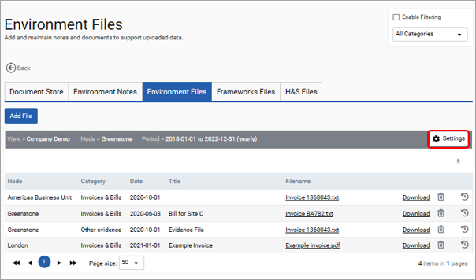
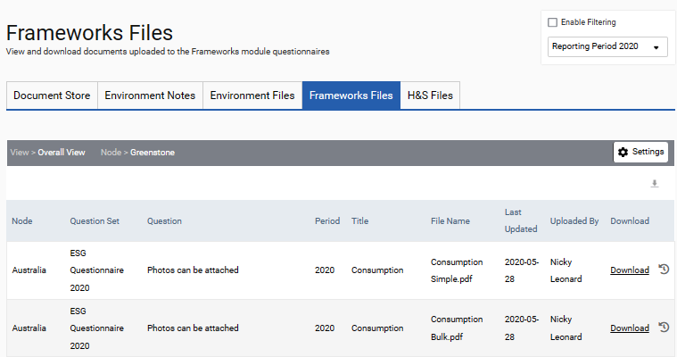

The Notes and Files tile in Utilities is a single area within SPM that contains all documents that have been uploaded to your site and comprises Document Store, Environment Notes, Environment Files, Frameworks Attachments, and H&S Attachments.
Files can be up to 25MB and must be one of the following file types: png, gif, jpeg, jpg, bmp, doc, docx, xls, xlsx, ppt, pptx, pdf, csv, txt, rtf, avi, mp4, wmv.
The document store is a centralized location enabling clients to store guidance, data templates and other documents that users can reference when using SPM. These documents can be categorised for ease of management.

‘Notes’ can be added to a specific node through 3 methods. Using the input form, using the notes and files section of the My Tools menu, or in the Environment Notes tab in the ‘Notes and Files’ section of Utilities. These are pictured below.



The environment notes are date stamped. When a note is added during data upload using the Input Form then the dates used for the data uploaded will also apply to the note. However, if a note is added in Utilities > Notes or Files or through the ‘My Tools’ option in the Environment module then at this stage a date for the note will be required. The form below shows the fields that are required when creating a note using the second and third options.

If you select the Include in report check box, the note will be included in the Notes & Files report available from Utilities > General Reports. Otherwise, it will not.
Please note that the view, node, and time period selected in Change Settings will determine what notes can be seen in this section.

‘Files’ can be added to a specific node during data input when using the input form, by using the ‘Notes and Files’ option in the ‘My Tools’ menu or in the Environment Notes tab in ‘Notes and Files’ of Utilities. It is possible to upload up to 10 files to a node at a time.

The environment files are date stamped. When a file is added during data upload using the Input Form, the dates used for the uploaded data will also apply to the file. However, if a file is added in Utilities > Notes or Files or through the ‘My Tools’ option in the Environment module then a date for the file will be required. The form below shows the fields that are required when creating a file using the second and third options.

Please note that the view, node and time period selected in ‘Change Settings’ will determine what files can be seen in this section. Files can be downloaded in the original format at any time, by clicking on the title of the file.

To enable users to quickly see what files have been uploaded to Frameworks custom questions these are all displayed in one area within Utilities > Notes and Files > Frameworks Files.
